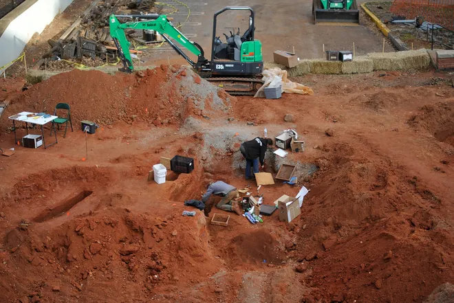

Anthropology and archaeology provide the scientific foundation for locating, documenting, and recovering evidence of past human activity. At NEXUS Collaborative, we apply archaeological methods and forensic anthropological expertise to investigate landscapes affected by conflict, disaster, and historical change. Through systematic survey, excavation, and analysis, we identify and interpret evidence associated with unmarked burials, historic battlefields, downed aircraft, and other sites of humanitarian and historical significance.
Our work is guided by scientific standards and a commitment to ethical stewardship. We develop and apply protocols for the respectful recovery and documentation of human remains, ensuring that investigations produce reliable scientific evidence while honoring the dignity of the individuals and communities involved. By integrating anthropology and archaeology with geospatial science, remote sensing, historical research, and artificial intelligence, we improve the effectiveness of humanitarian recovery missions, support forensic investigations, and contribute to the preservation and understanding of our shared cultural heritage.